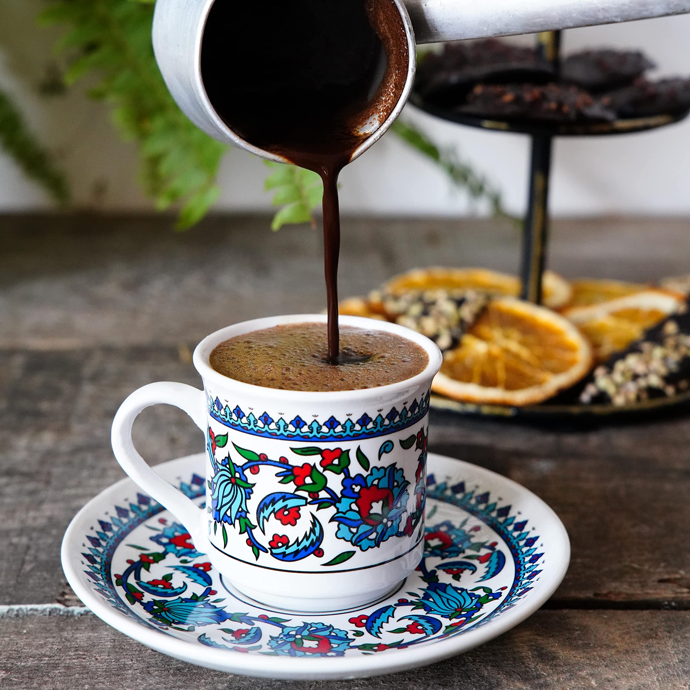
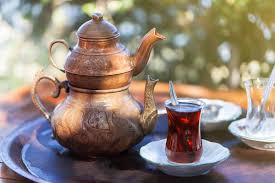
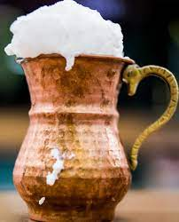
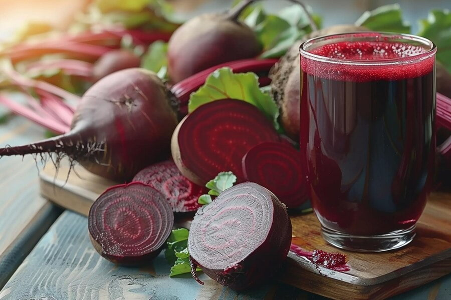
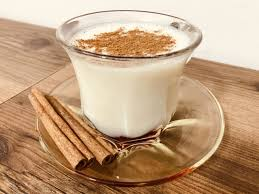

Turkish Coffee
History of Turkish Coffee
The history of Turkish coffee dates back to the 16th century. During the Ottoman Empire, coffee was brought from Yemen to Istanbul and became popular among the people. In 1555, during the reign of Sultan Suleiman the Magnificent, the first coffee houses began to open in Istanbul. These houses were not only places for drinking coffee but also social spaces for literature and art discussions.
Turkish coffee was recognized by UNESCO as an Intangible Cultural Heritage in 2013. This shows that Turkish coffee is more than just a drink, but a cultural symbol with great significance.
40 Years of Friendship
There is a saying in Turkish: "40 years of friendship." This expression refers to the idea that sharing a cup of Turkish coffee creates a bond that lasts for many years. Offering someone a cup of coffee signifies a long-lasting relationship between them. The preparation and drinking of Turkish coffee enhance trust and friendship between people.
Turkish Coffee and Fortune-Telling
Turkish coffee fortune-telling involves reading the patterns left by the coffee grounds (telve) in the cup after the coffee is consumed. Coffee reading has been a fun way for people to predict their futures for centuries. The reader interprets the shapes formed by the grounds and makes predictions about the drinker's life. Coffee reading is a social activity that brings people together and serves as a fun conversation starter.
Turkish Tea (Çay)
Turkish tea is one of the essential beverages of Türkiye and a vital part of Turkish culture. The history of Turkish tea dates back to the Ottoman Empire period. In the late 19th century, the tea plant began to spread across Turkish lands, and over time it became an integral part of daily life. By the late Ottoman period, particularly in the Black Sea region, tea cultivation became widespread, and by the 1920s, commercial production of tea began in Türkiye.
Today, Turkish tea is recognized not only in Türkiye but also worldwide as a symbol of Turkish culture. Tea reflects Turkish hospitality and the culture of conversation. It is commonly served during breakfast, afternoon gatherings, and as a gesture of hospitality, playing a significant role in strengthening social bonds.
How to Make Turkish Tea
To make Turkish tea, you need loose-leaf tea, water, and optionally, sugar. First, fill the bottom part of a Turkish teapot (çaydanlık) with water and bring it to a boil. Add the loose tea leaves to the top part of the teapot, depending on how many people you’re serving. Once the water in the bottom part boils, pour it over the tea leaves in the top part. Let it steep for about 10 to 15 minutes. After the tea is brewed, pour it into small glasses, adding hot water to adjust the strength of the tea as desired. Sugar can be added to taste.
Ayran
Ayran, which is also known as the non-alcoholic national drink of Türkiye, is made of yogurt, water and salt. It is very easy to make this drink on your own by mixing all the ingredients mentioned above, according to your own taste and desired thickness. In addition to thirst quenching, it is also very healthy. It does not contain sugar.
Ayran is one of the fundamental drinks of Turkish culture dating back to Central Asia. The Gokturks are thought to have first developed ayran thousands of years ago by diluting bitter yoghurt with water to improve its flavor. The popularity of this drink has spread to other parts of the world from Türkiye.
The small town of Susurluk in Balıkesir Province in northwestern Türkiye is well known for its ayran, which characteristically has a foamy head and creamy taste. The ingredients are pretty much the same as normal ayran but, restaurants in Susurluk use high-speed pumps to circulate ayran through a faucet so as to create a foamy texture with a heavy creamy top along with a lower salt content than in normal ayran.
Ayran goes quite well with doners, pastries and kebabs as well as main course dishes. Various street foods and fast foods can be eaten with ayran.

Şalgam (turnip juice)
Şalgam is a popular Turkish traditional fermented beverage from the southern Turkish cities of Adana, Hatay, Tarsus, Mersin,Kahramanmaras, İzmir and the Çukurova region. The name of the fruit is a Persian loanword meaning turnip. It is either called turnip juice, turnip water, shalgam juice, or shalgam water. The French traveler, naturalist and writer Pierre Belon described its production method in the 16th century.Şalgam is produced by lactic acid fermentation.Studies have shown that the juice of the purple carrot used in Şalgam reduces the effects of high-carbohydrate, high-fat diets in rats.It is one of the most popular beverages during winter in Türkiye.
Salep
Turkish Salep is a traditional hot drink made from the tuber of a wild orchid, known as orchis tuberosa. The tuber is dried and ground into a flour, which is then used to make the drink. Salep has a rich, creamy texture and is commonly consumed during the cold months in Türkiye, especially in winter, as it is known to warm the body and soothe the throat.